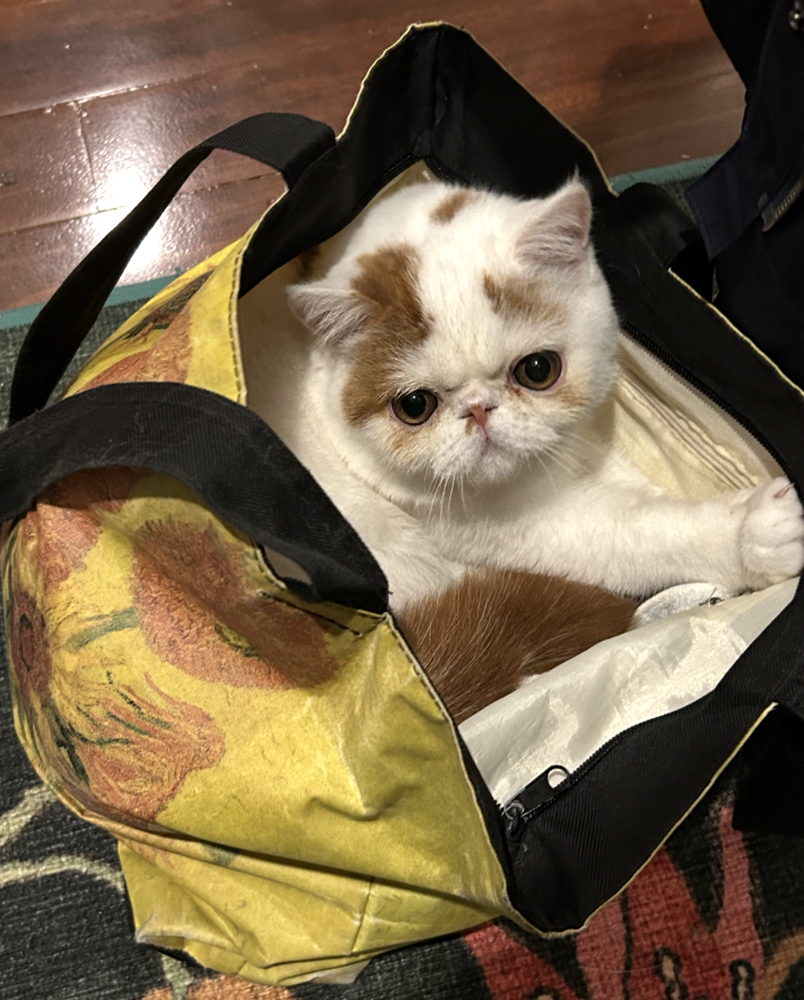
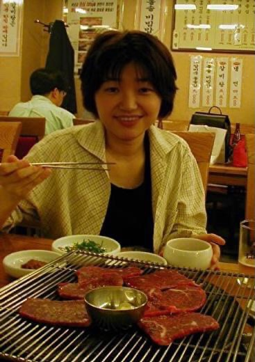
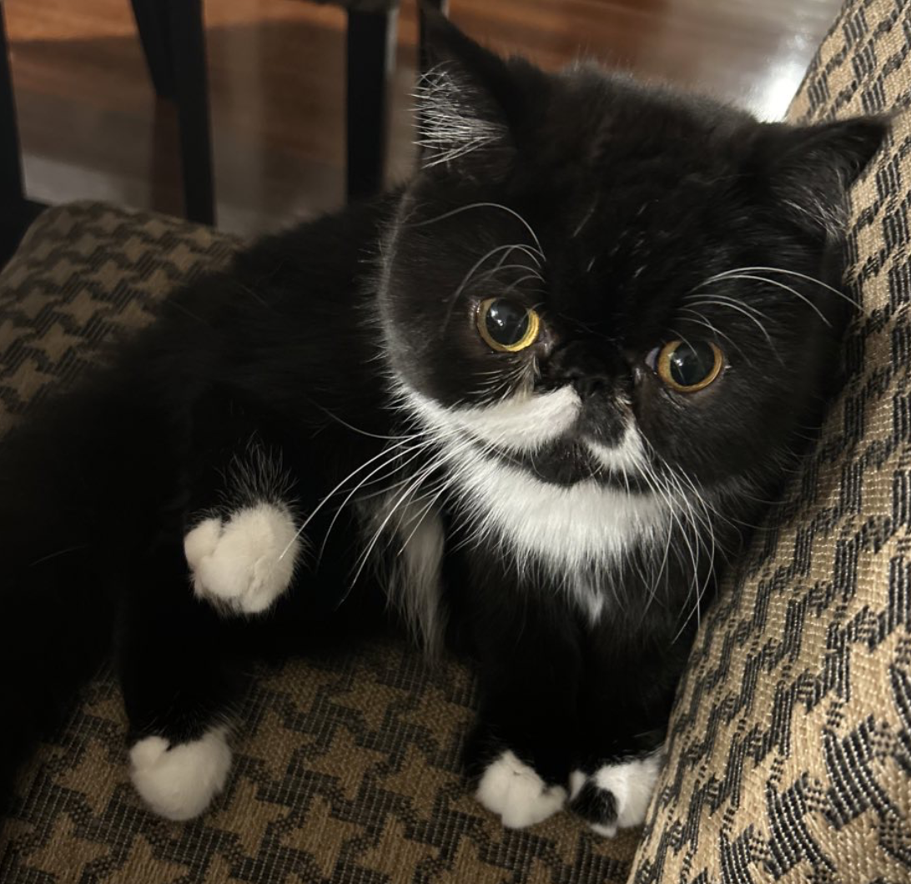

Sou
Curious and adventurous. Loves exploring bags, boxes, and anything new.
Shino Takayama
School of Economics · The University of Queensland
I am an economist and teacher by profession, but outside work I enjoy playing the piano, cooking, playing tennis, travelling, and spending time with my family and our two cats, Sou and Moe.
Position
Associate Professor, School of Economics
The University of Queensland
Leadership and recognition
Deputy Director of Teaching and Learning
Senior Fellow of the Higher Education Academy (SFHEA)
Education
PhD in Economics
University of Minnesota
Current academic interests Microeconomic theory, political economy, social choice, financial economics, and experimental economics
My research lies at the intersection of microeconomic theory, political economy, and financial economics. I am particularly interested in how institutions influence strategic behaviour, collective decision-making, the aggregation of dispersed information, and economic outcomes in markets and society.
My work combines rigorous theoretical modelling with empirical and policy-oriented research.
I have taught undergraduate and postgraduate courses across economic theory, financial economics, and applied economics. These include:

Enjoying Korean barbecue.
Outside academia, what matters most to me is the quality of life I share with my family. I enjoy learning, creating, travelling, and spending time around a table with good food and conversation.
Music has been part of my life since childhood. I started playing the piano at the age of three, stopped in my late teenage years, and returned to it many years later when my son began learning. Playing again has become one of my favourite ways to relax and challenge myself.
I also enjoy tennis, swimming, yoga, cooking, good food and wine, and oil painting. Our two cats, Sou and Moe, add considerable energy and personality to daily life—and frequently supervise my work from home.
Sou and Moe are enthusiastic companions whenever I work from home. They regularly inspect bags and boxes, supervise household activity, and remind me that breaks are essential.

Curious and adventurous. Loves exploring bags, boxes, and anything new.

Calm and observant. The quiet supervisor of the household.